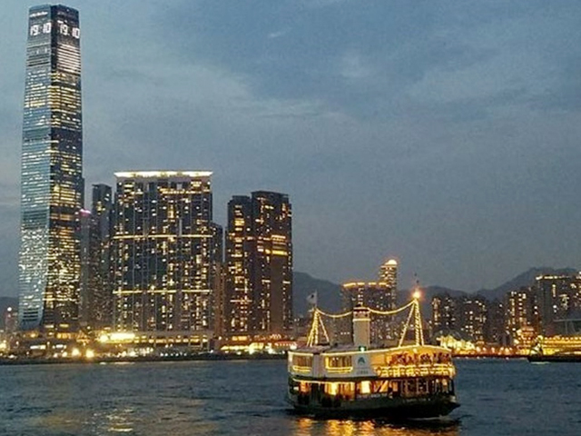
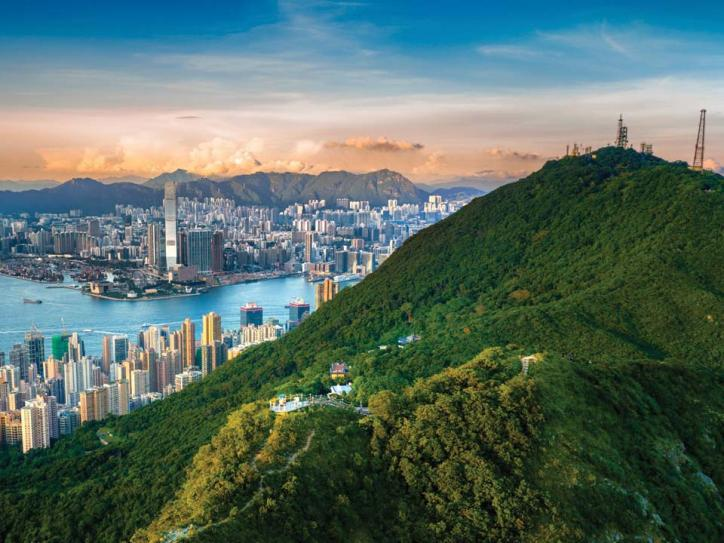
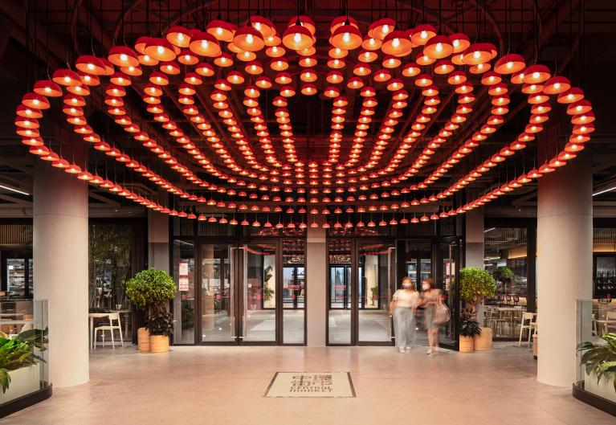
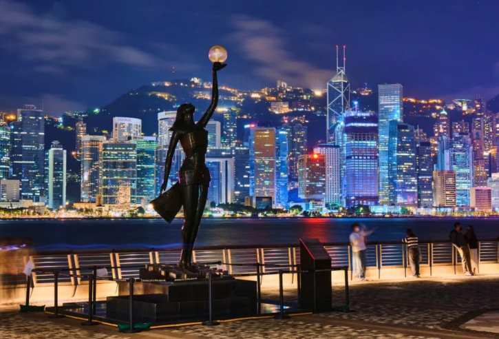
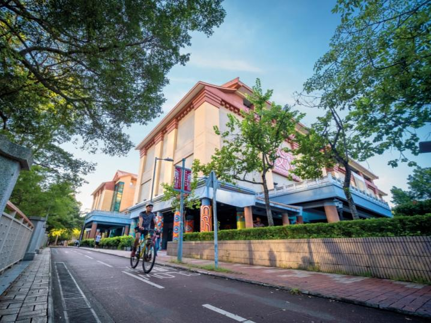
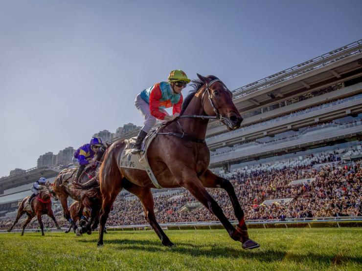
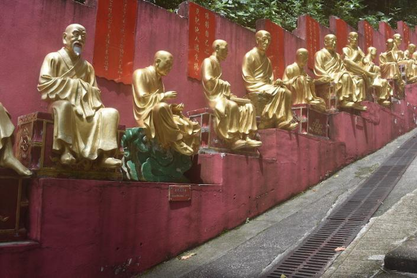
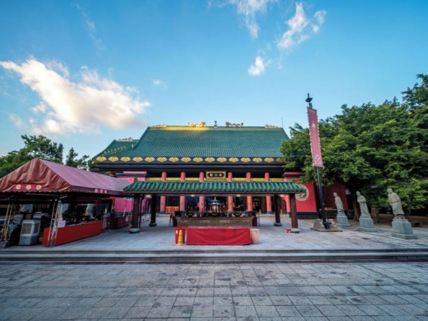
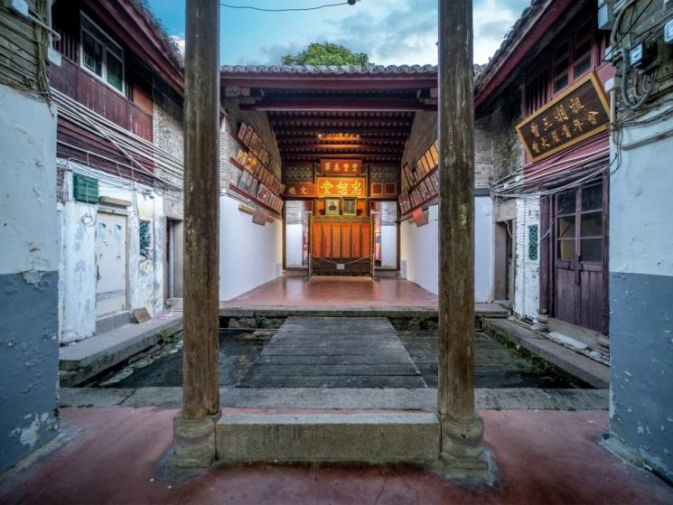
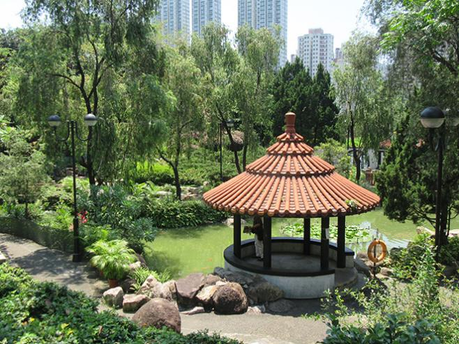

Exploring Hong Kong
Discover some of Hong Kong's most famous destinations and attractions below. Hong Kong welcomes you with its iconic landmarks, natural beauty, and vibrant culture during ADMA 2026.
Victoria Harbour

Victoria Harbour is a beautiful waterfront park located in the heart of Hong Kong. It is a popular destination for tourists and locals alike, with a wide range of activities to choose from.
The Peak

The higher you go, the more you see. Each of these hotspots on The Peak reveals a brilliant perspective of Hong Kong and makes ample perfect photo opportunities. Visit them all during various hours of the day to take in the scenery under a different light. Read on to see how you can experience the best of what The Peak offers — from shopping, recreation, dining, to taking memorable snapshots!
Central Market

The newly refreshed Central Market becomes one of the hottest dining and shopping hubs in town. Join the endless fun at Central Market — a ‘playground for all’.This iconic landmark portrays a boundaryless spatial concept to bring the community new and enhanced cultural experiences.With choreographed spaces that juxtapose local market stalls and start- ups, Central Market is a ‘21st Century Marketplace’ that interweaves food experience, retail - tainment and co - working spaces, serving as a destination that connects neighbourhoods and embodies new urban cultures and lifestyles.
Avenue of Stars

Avenue of Stars on the Tsim Sha Tsui promenade has always been a favourite among visitors. Here, not only can you enjoy breathtaking views of the city’s skyline, but you’ll also find handprints and statues of some of the biggest names in Hong Kong's film industry: Bruce Lee, Anita Mui, Jackie Chan, Jet Li and Tony Leung to name a few.
The Hong Kong Heritage Museum

Discover Hong Kong's history and culture at this museum, featuring beautiful Chinese paintings, a Cantonese opera exhibit, and a gallery dedicated to the works of renowned writer Dr Louis Cha (Jin Yong).
Sha Tin Racecourse

Opened in 1978, Sha Tin Racecourse is not just a place to watch races but a hub of excitement and culture. Sha Tin Racecourse features a world- class turf course alongside an all - weather dirt track.With a panoramic view of the tracks at Grandstand I and II, racegoers can enjoy the lush greenery and spectate thrilling races.
Ten Thousand Buddhas Monastery

This temple complex was built in the 1950s and features 5 temples, 4 pavilions and 1 tall pagoda. The most impressive part of the temple is actually the entrance, which features a climb up 430 steps. While you're climbing, you'll be greeted by golden Buddha statues on either side of you. The walk should take approximately 20-25 minutes
Che Kung Temple

This imposing temple is dedicated to Che Kung, a Southern Song dynasty (1127-1279) military commander who was particularly skilled in putting down uprisings in the 13th century. He escorted the last Song emperors to Hong Kong as they fled Mongolian invaders.
Tsang Koon-man

One of Hong Kong's best-preserved walled villages is just a short walk from MTR Che Kung Temple Station. Built in 1847 by stonemason Tsang Koon-man, the compound was home to the Tsang clan, a Hakka family that had migrated to Hong Kong in the 17th century. You can still see the original granite, bricks and timber used to build the village.
Shatin Park

Shatin Park is a beautiful and tranquil park located in the heart of Hong Kong. It is a popular destination for tourists and locals alike, with a wide range of activities to choose from.
For more attraction information, please visit https://partnernet.hktb.com/en/destination/hong_kong_experiences/index.html